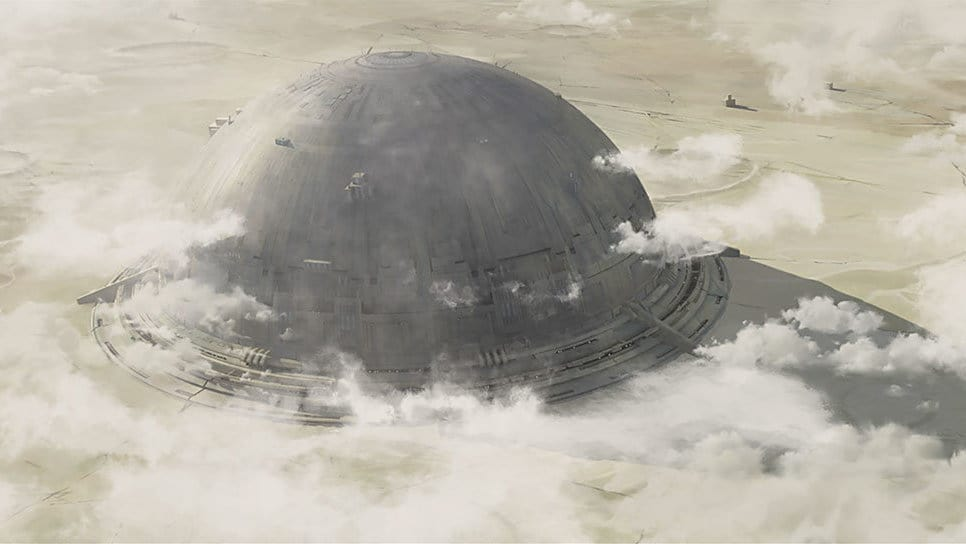

Mandalore
Histoire de la planète
Mandalore était une planète de la Bordure Extérieure.
Elle était le monde d'origine des Mandaloriens, un peuple guerrier et téméraire qui affronta les Jedi et mit à sac leur temple pendant la chute de l'Ancienne République.
Ces guerriers portaient des armures distinctive et étaient craints à travers la galaxie.

Des années de guerre laissèrent la planète inhospitalière, forçant les Mandaloriens à vivre au sein de villes protégées par des dômes.
Un gouvernement pacifique, mené par la duchesse Satine Kryze, arriva au pouvoir au terme d'une guerre civile qui décima la majorité de la population.
Les insurgés furent exilés sur la lune Concordia. Pendant la Guerre des Clones, les Nouveaux Mandaloriens furent renversés par le Collectif des Ombres de Dark Maul.
Sous le règne de l'Empereur Galactique Sheev Palpatine, Mandalore était gouvernée par l'Empire Galactique.